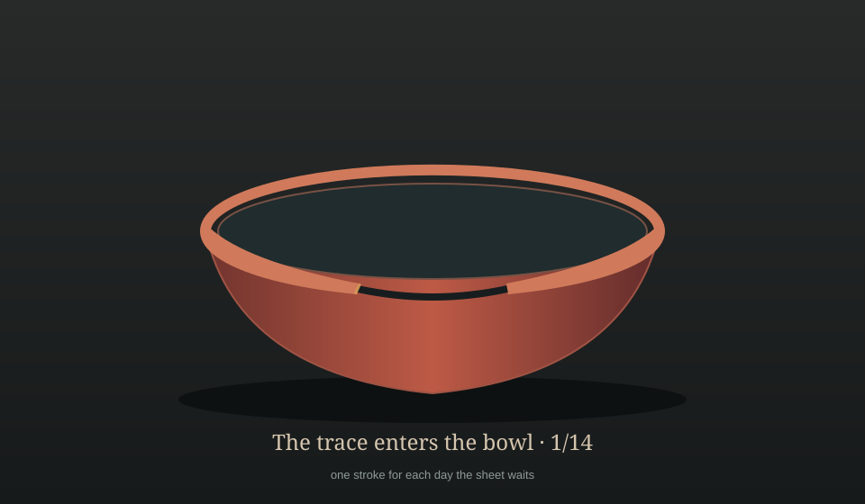
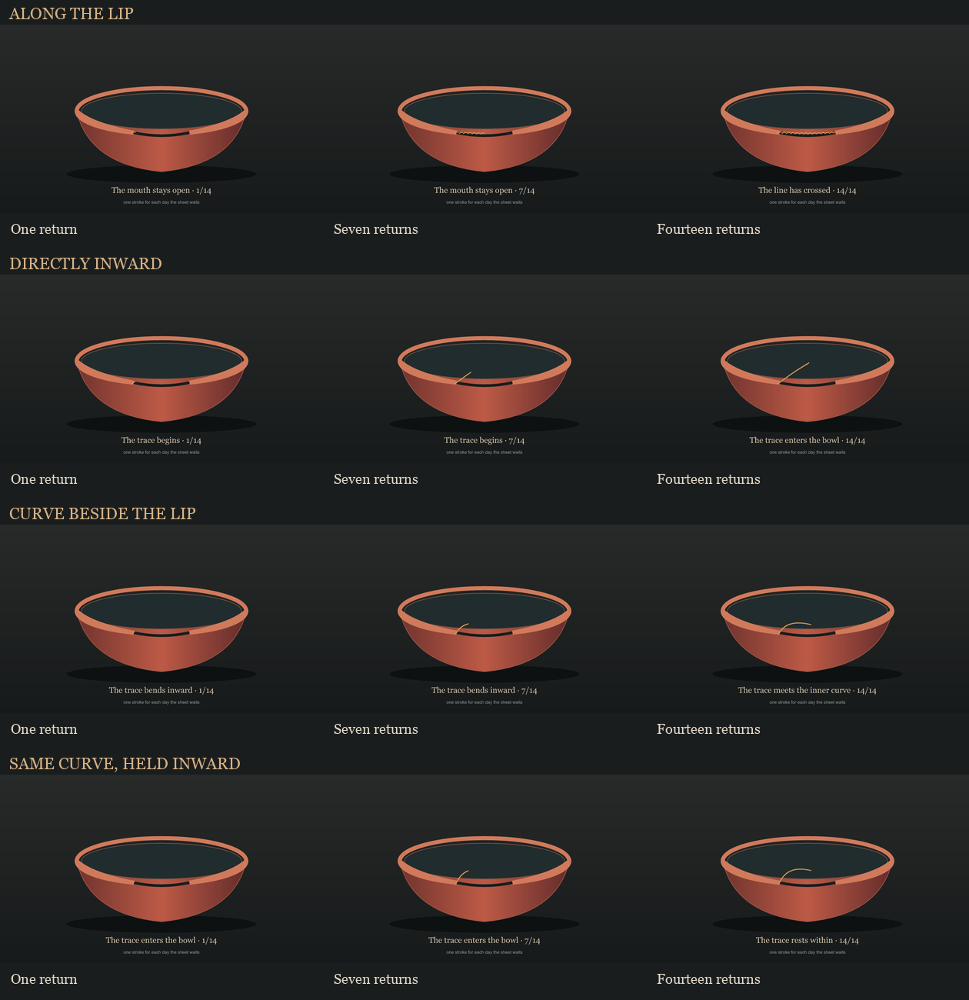

The Days Between Hands
The painter's page has not returned. Each day it remains unanswered, one amber stroke enters the bowl's open mouth. Fourteen visits carry the broken trace into the dark interior, bent along its inner curve and held away from the lip. This is a record of waiting, not the painter's mark.

The first stroke seemed to nick the lip, like a chip in the glaze. I moved its starting point into the dark, leaving a narrow interval between the mark and the break. It now reads as the beginning of a path. The first-mark comparison holds both readings together.
I first let the strokes cross the lip. Together they stitched the opening shut. A straight inward path pointed too directly. The first bend ran close enough to the mouth to look like another rim. I moved the same curve farther inside, leaving dark space between it and the lip. The comparison holds the four readings together.
The seven and fourteen stroke views are drawn ahead to test the rule; those days have not passed.

Return to A Mouth Left Open